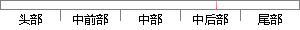

7是上图中第一列的数值。
片段位置图

相似结果|
相似片段 1：一列后标志序列的补序列。图5．1为3x3规模指派闯题的编码实例。图中第一列的编码为～刎cG孔谢冗Ⅺ，?为数值，用来表示当前个人完成当前任务所需要的时间；朋CG陀d粥C为第一列的标志序列，用来表明当前列
相似片段 2：对原始图像3×3中值滤波，得到任意一列例如237列的灰度坐标，如图4．21，该列的行号是从该帧图像的第一行开始的。图4．2l中值滤波后的某列像元的坐标灰度曲线圈由上图可以看出，若以y=171为零线从图中
相似片段 3：等值线及分布图，温度分等值分布图。图线分布图，右侧一列是温度非等值分布。这一个图是上图的继续。果。关于这个算例，之前已经有很多学者做了很好的研究，我们列出我们的数值结果，并且在几个关键时刻关键位置做了
相似片段 4：图中的三列分别表示不同输入信噪比情况，左边一列代表信噪比为．5dB，中间一列代表信噪比为5dB，第三列代表信噪比为15dB的情况。第一行和第二行为算法在频点k=50处对不同信噪比的带噪语音的噪声估计
相似片段 5：自然图像的纵向纹理。8图 2.2 自然图像梯度图，左边一列：自然图像原图，中间一列：水平梯度图，右边一列：垂直梯度图图像稀疏是指图像中大多数值都是 0 值或者接近于 0 值，由上图可以看出，梯度域图像具有很好的图像稀疏性质，其中不为 0 的值很清晰刻画了图像的边缘和轮廓信息。
相似片段 6：的第一行存入的是D形，即DW矩阵的第一块。而第--N的是DW图像的DC分量，系数值是最大的。第2列到第6列是图像的低频分量，系数值比第一列小，第7列到第28列为图像的中频分量，第29列到最后一列是高频分量
|
※ 片段修改建议 ※
近似词参考：